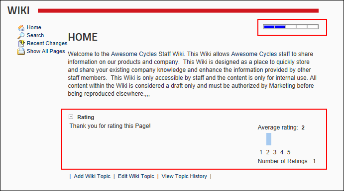

Viewing Ratings
How to view the average rating and total number of ratings for a page in the Wiki module. Note: Ratings may be disabled on some or all pages.
- Navigate to the required page. See "Navigating the Wiki"
- Click on the required page name. The average rating tally is displayed in the top right corner of the module. For example, the below image displays two blue bars from a possible five in the top right corner, indicates an average rating of 2 out of a total of 5.
- Maximize
 the Rating section (if required) to view the number of ratings included in the tally. In the below image only one rating has been submitted by the current user. If the user viewing the rating has not rated the page, they will be able to do so.
the Rating section (if required) to view the number of ratings included in the tally. In the below image only one rating has been submitted by the current user. If the user viewing the rating has not rated the page, they will be able to do so.

Viewing Page Ratings